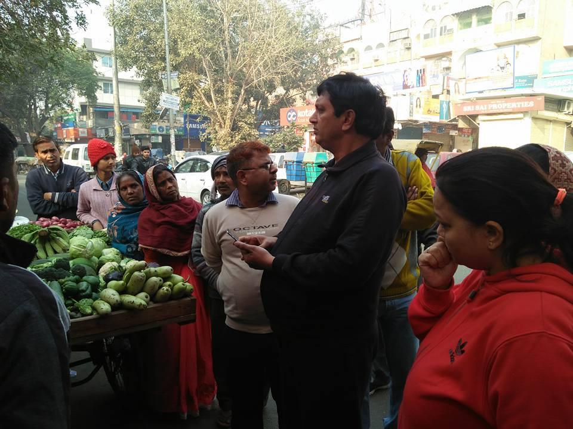
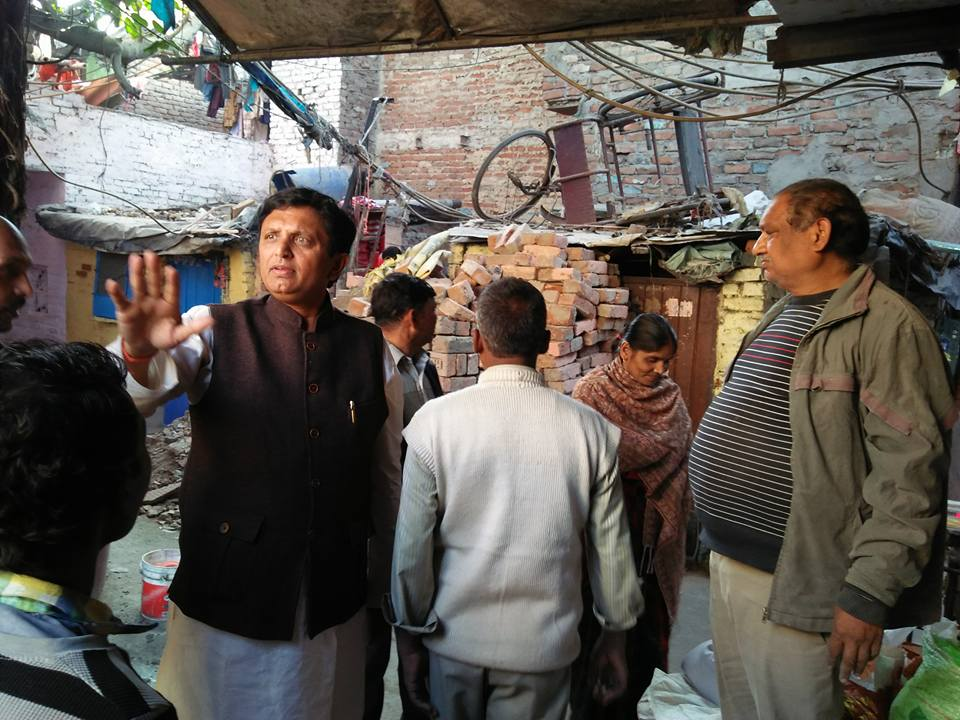
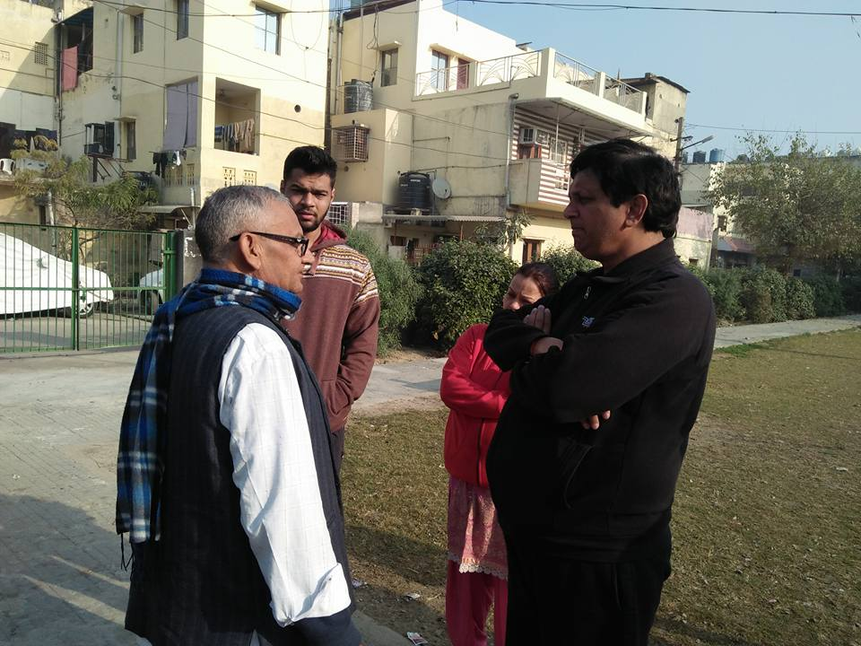

Visit at Local Hawkers and Public Meet Early Winter Morning
Shri. Sanjay Goyal Visits the Local Market with Hawkers at Dilshad Garden on 12-January-2018 at 9' O Clock , Early Morning . Had a Good
Conversation with the Residents of The Society , Urging Them to Come Forward with There Problems and Issues Regarding Different Aspects .
Learning Issues with The Hawkers and Seller .

Shri Sanjay Goyal Solving Public issues in The Area with Proper Guidances
Vivek Vihar Ward E-29 Councillor Shri Sanjay Goyal Keeps Consistant Eye on Public Issues and Makes First Effort Regarding the Problems .
There by on the Morning of 15-January-2018 , Newly Formed Councillor By Himself Urged the Residents of the Electoral area to Come Forward with
issues and Thereby Gave Guidance to Solve the Problems.

Listening to Public Issues Early Morning and Understanding Problems
People's Favourite and Most Prominent Councillor Of Vivek Vihar Ward 29-E Shri. Sanjay Goyal Consistantly Learning the Public Issues ,
Auditing the Consituency , Keeping the Issues Recorded and Providing Best Help to The Residents with Advicable Solutions . Understading
Motives of Residents and Understanding New Ideas and Methods Suggested.